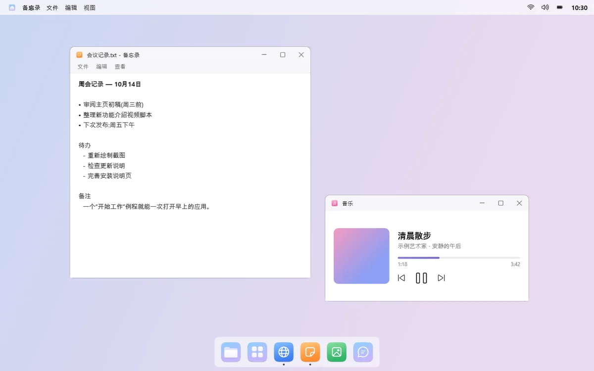
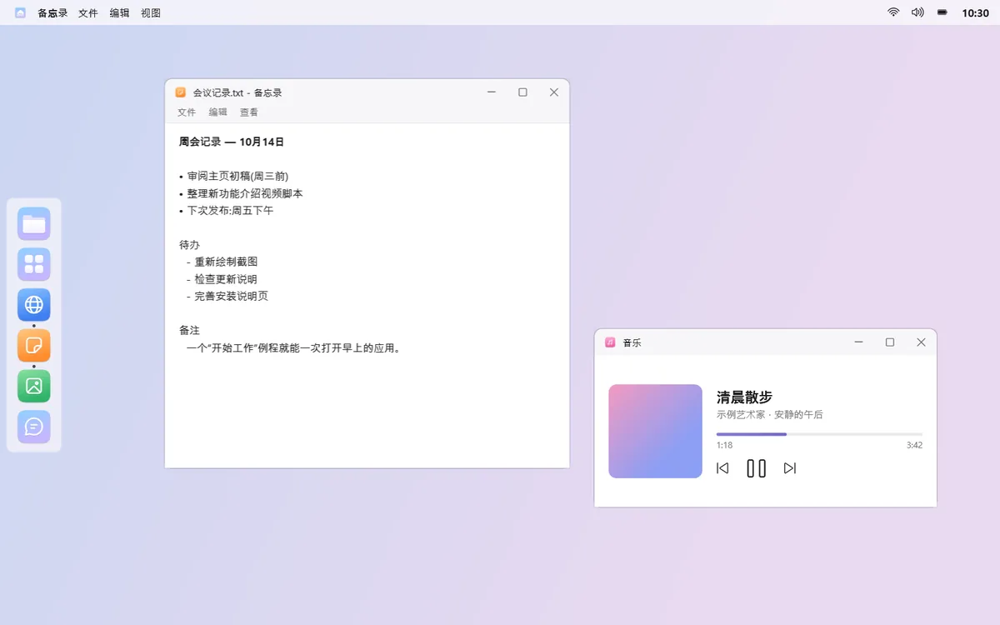
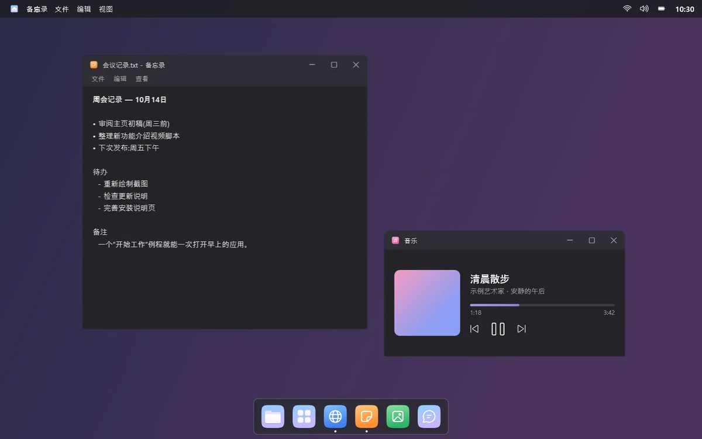
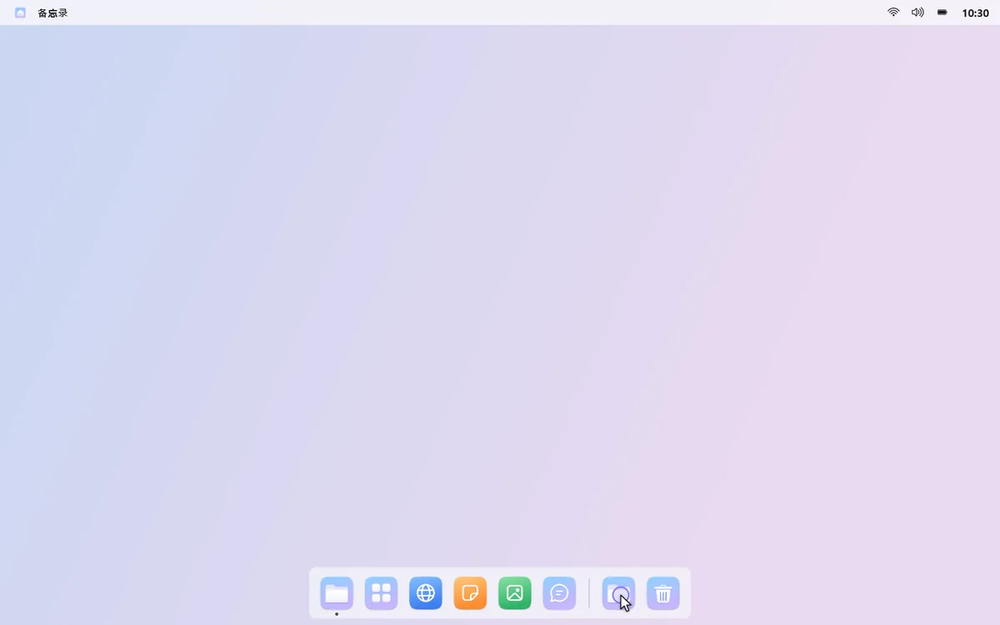
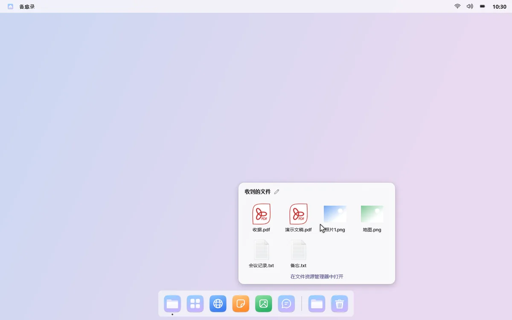
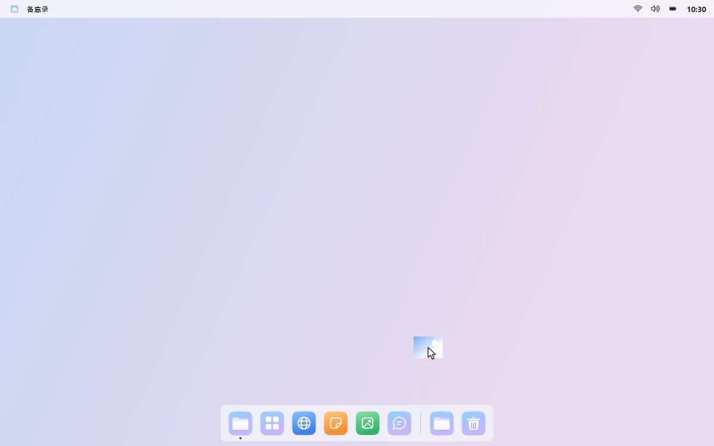
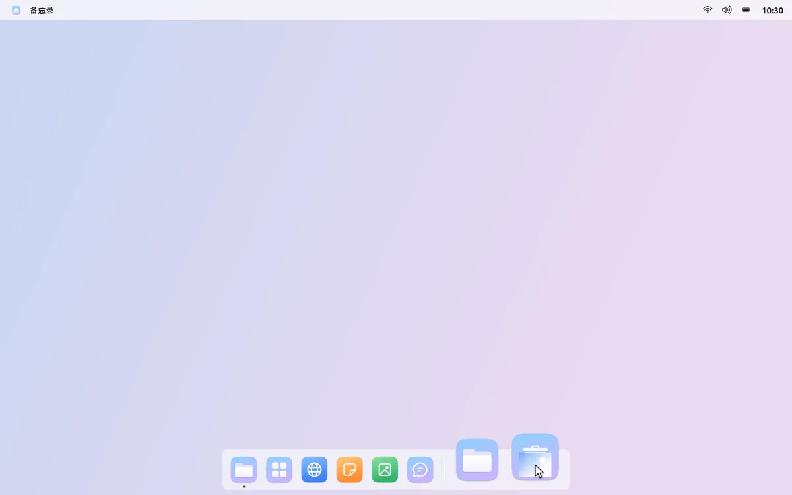
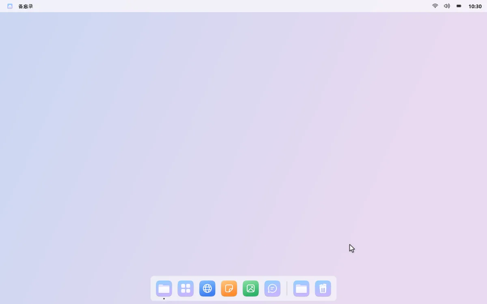

程序坞、文件夹与回收站
让底部更清爽、更整齐
用只放应用、文件夹和回收站的程序坞代替任务栏。平时隐藏，把鼠标移到屏幕边缘才出现。
01
位置和样子，由你决定
程序坞可以放在底部、左侧、右侧或顶部。拖动图标调整顺序，还能选择浅色或深色主题，以及悬停时图标的放大效果。



02
下载文件夹，一点就开
把文件夹放进程序坞，点按就能以网格查看里面最新的文件。有新文件时，会出现一个小圆点。



03
回收站，就在手边
把文件拖到程序坞的回收站即可删除。点按回收站查看最近删除的文件，右键点按即可还原。


04
用实时预览挑选窗口
点按有多个窗口的应用，从实时预览中选出想要的那个。如果它在另一个桌面上，mongdock 会带你过去。也可以让程序坞只显示当前桌面的应用。